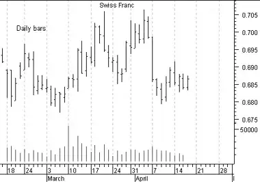

Introduction - Periodicity
Periodicity
Regardless of the "periodicity" of the data in your charts (i.e., hourly, daily, weekly, monthly, etc), the basic principles of technical analysis endure. Consider the following charts of a Swiss Franc contract shown in Figures 40, 41, and 42.
Figure 40
Figure 41

Figure 42

Typically, the shorter the periodicity, the more difficult it is to predict and profit from changes in prices. The difficulty associated with shorter periodicities is compounded by the fact that you have less time to make your decisions.
"While we stop and think, we often miss our opportunity."
---Publilius Syrus, 1st century B.C.
Opportunities exist in any time frame. But I have rarely met a successful short-term trader who wasn't also successful a long-term investor. And I have met many investors who get caught by the grass-is-greener syndrome believing that shorter-and-shorter time periods is the secret to making money--it isn't.